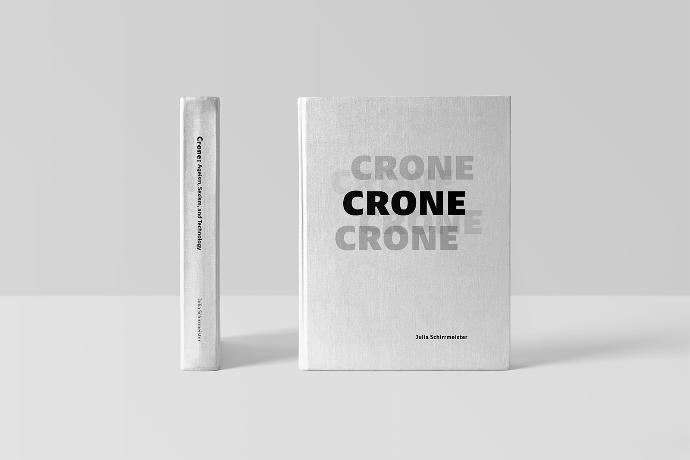
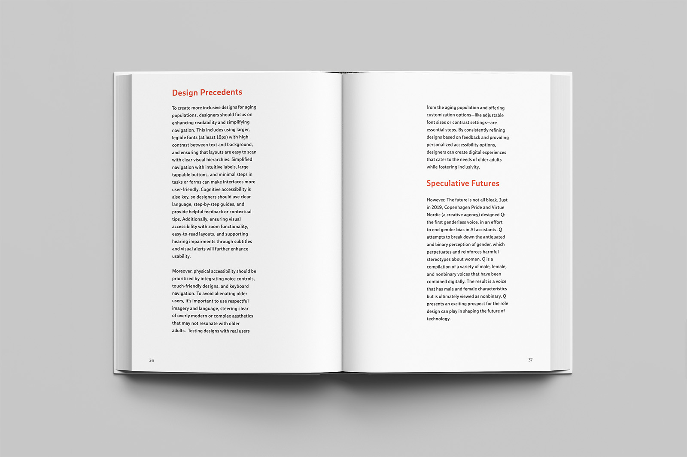
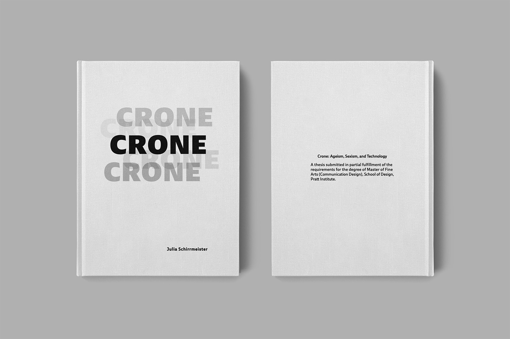

Thesis Book
The design of my MFA thesis publication — a book-length scholarly work requiring a complete editorial design system built from scratch. Every decision, from the type scale to the grid structure to the color palette, was made to serve the text and elevate the research.

Project Overview & Concept
This is both a design project and a research project — the thesis book documents original scholarly work while itself being a designed artifact. The challenge was designing a system that could hold complex academic content — long-form text, footnotes, images, charts, and citations — while remaining visually compelling and readable.
The central design question: how does the form of a book embody its argument? Rather than treating design as a neutral container, I worked to make every typographic and structural choice expressive of the thesis content itself.
A book's form is never neutral. It is always an argument about how to read.
Key Spreads
Selected spreads showing the range of layout types — chapter opener, full-text spread, image essay, and bibliography.

Print Production
The book was printed offset on an uncoated text stock with a case-bound hardcover. Print production required careful pre-press work: bleeds, color profiles, preflight checks, and printer coordination. Proofs were reviewed and adjusted before final print run.


Final Outcome & Reflection
The thesis book is the project I'm most proud of — not because it's the most visually striking, but because it demanded the most synthesis. Designing a book about my own research required me to hold the designer and the writer simultaneously, and to trust that restraint is a form of expression.
What I learned: Long-form editorial design is fundamentally about rhythm — how the reader moves through a text, when they rest, when they're surprised. The grid is a score; the pages are measures; the reading is the performance.